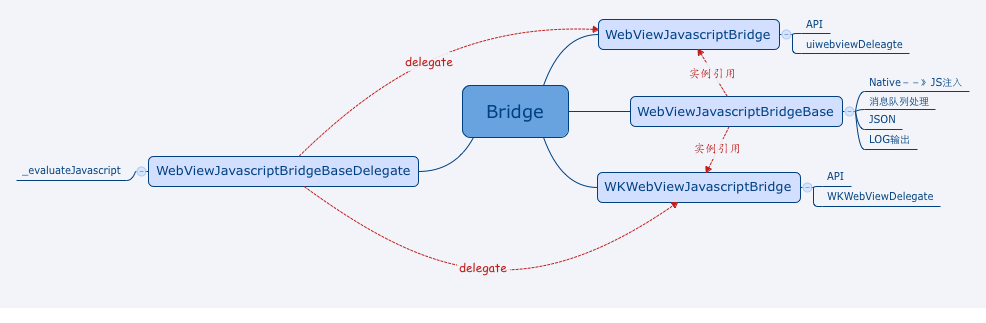
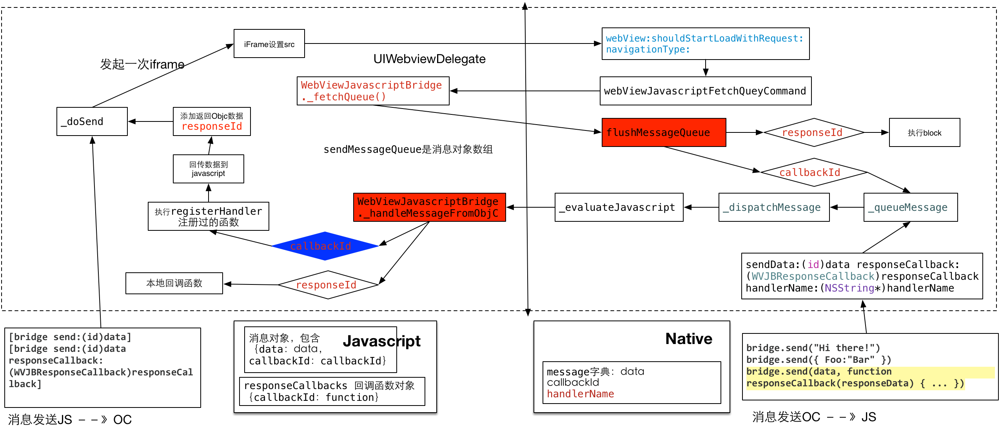

1、对外接口
|
初始化OC
|
初始化JS
|
|
[WebViewJavascriptBridge bridgeForWebView:(UIWebView/WebView*)webview handler:(WVJBHandler)handler]
[WebViewJavascriptBridge bridgeForWebView:(UIWebView/WebView*)webview webViewDelegate:(UIWebViewDelegate*)webViewDelegate handler:(WVJBHandler)handler]
|
document.addEventListener('WebViewJavascriptBridgeReady', function onBridgeReady(event) { ... }, false)
bridge.init(function messageHandler(data, response) { ... })
|
|
OC发送消息to JS
|
JS发送消息to OC
|
|
[bridge send:(id)data]
[bridge send:(id)data responseCallback:(WVJBResponseCallback)responseCallback]
|
bridge.send("Hi there!")
bridge.send({ Foo:"Bar" })
bridge.send(data, function responseCallback(responseData) { ... })
|
|
OC注册事件（先）
|
JS调用事件（后）
|
|
[bridge registerHandler:(NSString*)handlerName handler:(WVJBHandler)handler]
|
WebViewJavascriptBridge.callHandler("handlerName")
|
|
OC调用事件（后）
|
JS注册事件（先）
|
|
[bridge callHandler:(NSString*)handlerName data:(id)data]
[bridge callHandler:(NSString*)handlerName data:(id)data responseCallback:(WVJBResponseCallback)callback]
|
bridge.registerHandler("handlerName", function(responseData) { ... })
|
三类API接口用于OC与JS之间交互：初始化接口；发送消息接口，并且可以添加发送消息完成的回调函数；事件注册和调用接口，需要先在一端注册事件，另一端可以根据事件名称调用函数
除了上述提到的外部方法：还有两个方法十分重要，JS部分最重要的内部方法： _handleMessageFromObjC；OC部分重要的内部方法： flushMessageQueue
2、类结构图

WebViewJavascriptBridge目前既支持原有的UIWebView，也支持iOS8+之后新的WKWebView，使用时可以二选其一；
WebViewjavascriptBridgeBase是通用类，用于处理从Native到JS的消息注入，消息队列处理和分发，JSON数据的序列化和反序列化，LOG输出；
3、源码分析

3.1 消息发送JS－》Native
[bridge send:(id)data responseCallback:(WVJBResponseCallback)responseCallback]
这两个函数最后都是调用_doSend({ data:data }, responseCallback)
function _doSend(message, responseCallback) {
if (responseCallback) {
var callbackId = 'cb_'+(uniqueId++)+'_'+new Date().getTime()
responseCallbacks[callbackId] = responseCallback
message['callbackId'] = callbackId
}
sendMessageQueue.push(message)
messagingIframe.src = CUSTOM_PROTOCOL_SCHEME + '://' + QUEUE_HAS_MESSAGE
}
首先生成callbackId，由不断加1的唯一需要和时间戳构成，如果有responseCallback函数，使用callbackId作为索引，存入responseCallbacks对象，等到从OC侧返回的信息中对应的callbackId与当前responseCallbacks中callbackId相同时，调用回调函数responseCallback；sendMessageQueue是个消息数组，每次的新消息放入其中，messagingIframe是iframe对象，当设置src产生一次请求，在OC端的
(BOOL)webView:(UIWebView *)webView shouldStartLoadWithRequest:(NSURLRequest *)request navigationType:(UIWebViewNavigationType)navigationType 会拦截请求内容
- (BOOL)webView:(UIWebView *)webView shouldStartLoadWithRequest:(NSURLRequest *)request navigationType:(UIWebViewNavigationType)navigationType {
if (webView != _webView) { return YES; }
NSURL *url = [request URL];
__strong WVJB_WEBVIEW_DELEGATE_TYPE* strongDelegate = _webViewDelegate;
if ([_base isCorrectProcotocolScheme:url]) {
if ([_base isCorrectHost:url]) {
NSString *messageQueueString = [self _evaluateJavascript:[_base webViewJavascriptFetchQueyCommand]];
[_base flushMessageQueue:messageQueueString];
} else {
[_base logUnkownMessage:url];
}
return NO;
} else if (strongDelegate && [strongDelegate respondsToSelector:@selector(webView:shouldStartLoadWithRequest:navigationType:)]) {
return [strongDelegate webView:webView shouldStartLoadWithRequest:request navigationType:navigationType];
} else {
return YES;
}
}
重点部分：执行注入_evaluateJavascript，
OC
-(NSString *)webViewJavascriptFetchQueyCommand {
return @"WebViewJavascriptBridge._fetchQueue();";
}
JS
function _fetchQueue() {
var messageQueueString = JSON.stringify(sendMessageQueue)
sendMessageQueue = []
return messageQueueString
}
这个函数从JS的sendMessageQueue消息队列获取内容返回，这个sendMessageQueue是在之前的_doSend函数中传入的消息内容，也就是NSString *messageQueueString = [self _evaluateJavascript:[_base webViewJavascriptFetchQueyCommand]];这句代码获得从JS侧拿到的数据内容，然后调用[_base flushMessageQueue:messageQueueString];对消息分发处理
- (void)flushMessageQueue:(NSString *)messageQueueString{
id messages = [self _deserializeMessageJSON:messageQueueString];
if (![messages isKindOfClass:[NSArray class]]) {
NSLog(@"WebViewJavascriptBridge: WARNING: Invalid %@ received: %@", [messages class], messages);
return;
}
for (WVJBMessage* message in messages) {
if (![message isKindOfClass:[WVJBMessage class]]) {
NSLog(@"WebViewJavascriptBridge: WARNING: Invalid %@ received: %@", [message class], message);
continue;
}
[self _log:@"RCVD" json:message];
NSString* responseId = message[@"responseId"];
if (responseId) {
WVJBResponseCallback responseCallback = _responseCallbacks[responseId];
responseCallback(message[@"responseData"]);
[self.responseCallbacks removeObjectForKey:responseId];
} else {
WVJBResponseCallback responseCallback = NULL;
NSString* callbackId = message[@"callbackId"];
if (callbackId) {
responseCallback = ^(id responseData) {
if (responseData == nil) {
responseData = [NSNull null];
}
WVJBMessage* msg = @{ @"responseId":callbackId, @"responseData":responseData };
[self _queueMessage:msg];
};
} else {
responseCallback = ^(id ignoreResponseData) {
// Do nothing
};
}
WVJBHandler handler;
if (message[@"handlerName"]) {
handler = self.messageHandlers[message[@"handlerName"]];
} else {
handler = self.messageHandler;
}
if (!handler) {
[NSException raise:@"WVJBNoHandlerException" format:@"No handler for message from JS: %@", message];
}
handler(message[@"data"], responseCallback);
}
}
}
这个是整个框架中OC侧重要的函数，但是目前首先分析消息发送JS－》Native涉及到的部分内容，返回的消息包含callbackId，数据拼接后调用[self _queueMessage:msg];发送回JS侧的数据改为responseId为关键字key，具体如下：
- (void)_queueMessage:(WVJBMessage*)message {
if (self.startupMessageQueue) {
[self.startupMessageQueue addObject:message];
} else {
[self _dispatchMessage:message];
}
}
self.startupMessageQueue只有首次启动时有效，之后为nil，所以都是走[self _dispatchMessage:message];
- (void)_dispatchMessage:(WVJBMessage*)message {
NSString *messageJSON = [self _serializeMessage:message];
[self _log:@"SEND" json:messageJSON];
messageJSON = [messageJSON stringByReplacingOccurrencesOfString:@"\\" withString:@"\\\\"];
messageJSON = [messageJSON stringByReplacingOccurrencesOfString:@"\"" withString:@"\\\""];
messageJSON = [messageJSON stringByReplacingOccurrencesOfString:@"\'" withString:@"\\\'"];
messageJSON = [messageJSON stringByReplacingOccurrencesOfString:@"\n" withString:@"\\n"];
messageJSON = [messageJSON stringByReplacingOccurrencesOfString:@"\r" withString:@"\\r"];
messageJSON = [messageJSON stringByReplacingOccurrencesOfString:@"\f" withString:@"\\f"];
messageJSON = [messageJSON stringByReplacingOccurrencesOfString:@"\u2028" withString:@"\\u2028"];
messageJSON = [messageJSON stringByReplacingOccurrencesOfString:@"\u2029" withString:@"\\u2029"];
NSString* javascriptCommand = [NSString stringWithFormat:@"WebViewJavascriptBridge._handleMessageFromObjC('%@');", messageJSON];
if ([[NSThread currentThread] isMainThread]) {
[self _evaluateJavascript:javascriptCommand];
} else {
dispatch_sync(dispatch_get_main_queue(), ^{
[self _evaluateJavascript:javascriptCommand];
});
}
}
此函数对message特殊字符进行转义处理，然后执行JS注入语句，WebViewJavascriptBridge._handleMessageFromObjC执行到JS侧
这个是整个框架中JS侧重要的函数，用于处理从OC侧返回的消息
function _dispatchMessageFromObjC(messageJSON) {
setTimeout(function _timeoutDispatchMessageFromObjC() {
var message = JSON.parse(messageJSON)
var messageHandler
var responseCallback
if (message.responseId) {
responseCallback = responseCallbacks[message.responseId]
if (!responseCallback) { return; }
responseCallback(message.responseData)
delete responseCallbacks[message.responseId]
} else {
if (message.callbackId) {
var callbackResponseId = message.callbackId
responseCallback = function(responseData) {
_doSend({ responseId:callbackResponseId, responseData:responseData })
}
}
var handler = WebViewJavascriptBridge._messageHandler
if (message.handlerName) {
handler = messageHandlers[message.handlerName]
}
try {
handler(message.data, responseCallback)
} catch(exception) {
if (typeof console != 'undefined') {
console.log("WebViewJavascriptBridge: WARNING: javascript handler threw.", message, exception)
}
}
}
})
}
执行JS侧本地回调函数
3.2 消息发送 OC--》JS
bridge.send("Hi there!")
bridge.send({ Foo:"Bar" })
bridge.send(data, function responseCallback(responseData) { ... })
调用
[_base sendData:data responseCallback:responseCallback handlerName:nil];
执行 _queueMessage
3.3 OC注册事件和JS调用
OC侧注册
- (void)registerHandler:(NSString *)handlerName handler:(WVJBHandler)handler {
_base.messageHandlers[handlerName] = [handler copy];
}
JS调用
function callHandler(handlerName, data, responseCallback) {
_doSend({ handlerName:handlerName, data:data }, responseCallback)
}
加入handlerName和data数据传给OC侧，JS侧记录responseCallback，最后也会走到- (void)flushMessageQueue:(NSString *)messageQueueString函数中，由于既没有callbackId也没有responseId，所以只处理handlerName及相关数据，最后走到 - (void)flushMessageQueue:(NSString *)messageQueueString解析，OC侧执行之前注册的handler并传入data数据
3.4 JS注册事件和OC调用
JS注册
function registerHandler(handlerName, handler) {
messageHandlers[handlerName] = handler
}
本地记录
OC调用
- (void)callHandler:(NSString *)handlerName data:(id)data {
[self callHandler:handlerName data:data responseCallback:nil];
}
- (void)callHandler:(NSString *)handlerName data:(id)data responseCallback:(WVJBResponseCallback)responseCallback {
[_base sendData:data responseCallback:responseCallback handlerName:handlerName];
}
handlerName和data 在 - (void)sendData:(id)data responseCallback:(WVJBResponseCallback)responseCallback handlerName:(NSString*)handlerName中处理
4 、总结
1、与其它框架相比，此框架没有采用url拦截解析参数方式，而是多次JS注入参数获取，API接口暴露的操作在底层需要多次OC与JS之间交互完成
2、